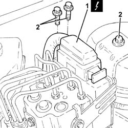
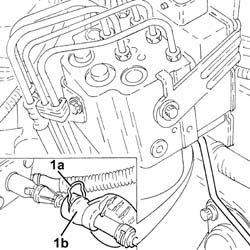
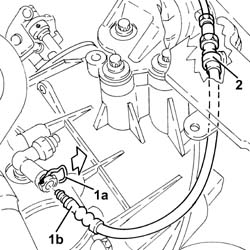
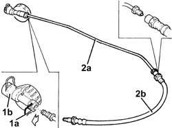
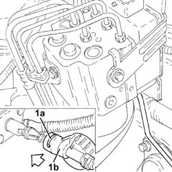

1820B56 RIGID PIPE FROM VIBRATION DAMPER TO SLAVE CYLINDER - R R
- Path
- Procedures > 18 CLUTCH UNIT > 1820 CLUTCH RELEASE CONTROLS > 1820B HYDRAULIC CLUTCH SYSTEM > 1820B56 RIGID PIPE FROM VIBRATION DAMPER TO SLAVE CYLINDER - R R
- Kind
- repair procedure (removal / refitting; the operation number is the code)
- Applies to
- engines: 1.8, 2.2, 1.9 JTD 8v, 1.9 JTD 16v; all production periods
- Interactive page
- https://sloeber94.github.io/elrnDB-fCrm/en/#/194000437
Applies to: engines: 1.8, 2.2, 1.9 JTD 8v, 1.9 JTD 16v; all production periods
 Removing
Removing
 Refitting
RefittingOp. 5530B52 BATTERY SUPPORT/DRIP TRAY - R.R
1. Disconnect the electrical connection from the ABS electronic and hydraulic control unit.
Description | Connector | |
|---|---|---|
1 | ABS control unit | See M050 ABS CONTROL UNIT |
2. Undo the bolts fixing the A.B.S. hydraulic and electronic control unit mounting brackets.

Applies to: engines: 1.8, 2.2, 1.9 JTD 8v, 1.9 JTD 16v; all production periods
- Lift the A.B.S. hydraulic and electronic control unit, complete with mounting brackets, as much as necessary.
1. Raise the retaining clip (1a) and disconnect the clutch hydraulic circuit vibration damper (1b), clutch master cylinder side.

Applies to: engines: 1.8, 2.2, 1.9 JTD 8v, 1.9 JTD 16v; all production periods
1. Lift up the clip (1a) and disconnect the flexible pipe from the vibration damper to the operating cylinder (1b), operating cylinder side.
2. Release the flexible pipe from the vibration damper to the operating cylinder from the retaining band.

Applies to: engines: 1.8, 2.2, 1.9 JTD 8v, 1.9 JTD 16v; all production periods
- Remove the rigid and flexible pipes from the vibration damper to the operating cylinder complete with vibration damper.
1. At the bench, lift up the clip (1a) and separate the vibration damper (1b) from the rigid pipe.
2. Undo the connector and disconnect the rigid pipe from the vibration damper to the operating cylinder (2a) from the flexible pipe (2b).

Applies to: engines: 1.8, 2.2, 1.9 JTD 8v, 1.9 JTD 16v; all production periods
Refitting
Removing- Connect the rigid pipe from the vibration damper to the operating cylinder to the flexible pipe and tighten the connector to the recommended torque.
Component | Fastening | dia | Value (daNm) | Validity |
|---|---|---|---|---|
Flexible supply pipe to operating cylinder | Connector | - | (rigid pipe side) |
- Connect the vibration damper to the rigid pipe and secure it using the clip.
- Place the rigid and flexible pipes from the vibration damper to the operating cylinder complete with vibration damper back in their housing.
- Fasten the flexible pipe from the virbration damper to the operating cylinder using the band.
- Connect the flexible pipe from the vibration damper to the operating cylinder, operating cylinder side and fasten it using the clip.
1. Fit the retaining clip (1a) fully, then fit the clutch hydraulic circuit vibration damper (1b) on the clutch master cylinder until the clip is properly attached.

Applies to: engines: 1.8, 2.2, 1.9 JTD 8v, 1.9 JTD 16v; all production periods
- Place the A.B.S. hydraulic and electronic control unit, complete with mounting brackets, in its housing.
- Tighten the bolts fixing the A.B.S. hydraulic and electronic control unit mounting brackets to the recommended torque.
Component | Fastening | dia | Value (daNm) | Validity |
|---|---|---|---|---|
A.B.S. hydraulic and electronic control unit mounting brackets | Bolt | M8 | (bodyshell side) 1.7 - 2.3 |
- Connect the electrical connection to the ABS electronic and hydraulic control unit.
Op. 0010T64 BRAKE AND/OR CLUTCH FLUID CHECK LEVEL AND TOP UP AS NECESSARY
Op. 0010T67 HYDRAULIC CLUTCH SYSTEM - BLEED AIR
Topics linked from this page (4)
- 0010T64 BRAKE AND/OR CLUTCH FLUID CHECK LEVEL AND TOP UP AS NECESSARY
- 0010T67 HYDRAULIC CLUTCH SYSTEM - BLEED AIR
- 5530B10 BATTERY - R+R
- 5530B52 BATTERY SUPPORT/DRIP TRAY - R.R